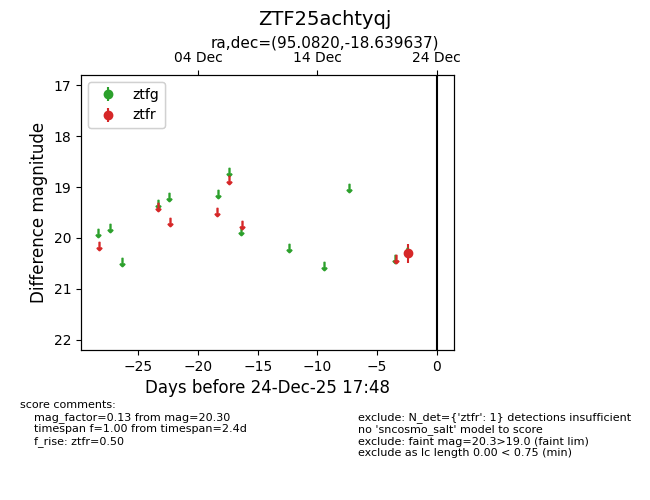
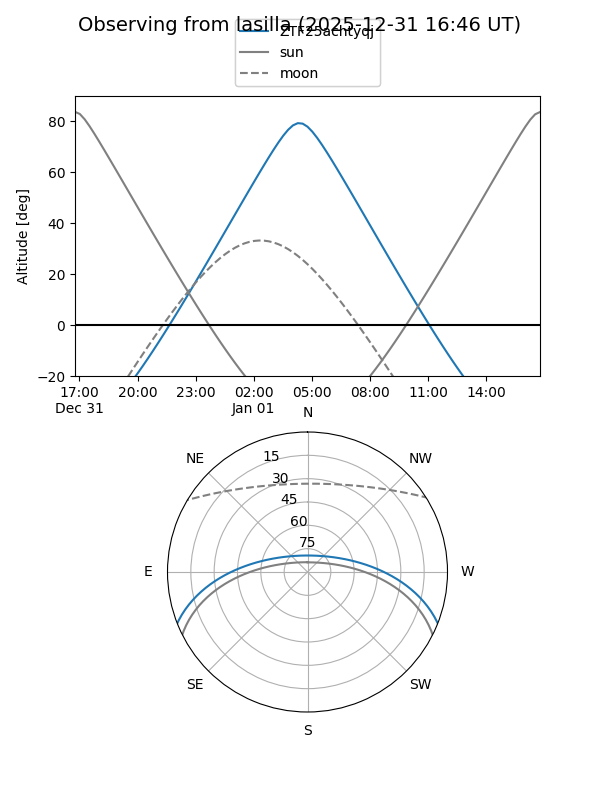
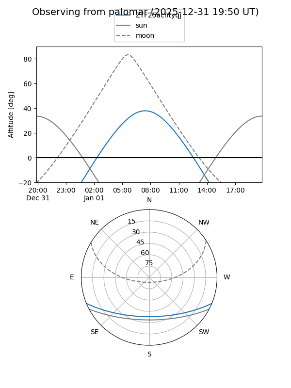

ZTF25achtyqj
Target ZTF25achtyqj at 2025-12-31 18:00
Aliases and brokers:
FINK: link
Lasair: link
ALeRCE: link
alt names
ZTF25achtyqj (ztf,fink_ztf)
Coordinates:
equatorial (ra, dec) = 95.0820,-18.63964
equatorial (HMS+DMS) = 06:20:19.67,-18:38:22.69
galactic (l, b) = (226.4660,-15.06183)
Flags:
Photometry:
last ztfr=20.30
1 ztfr detections
Lightcurve

Visibility


Additional plots